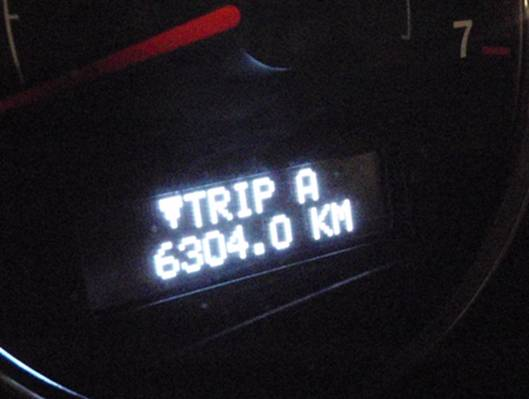
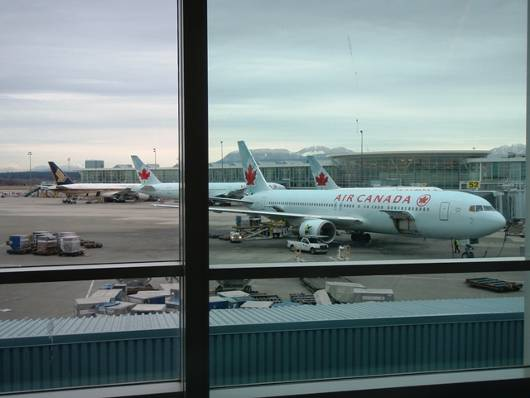
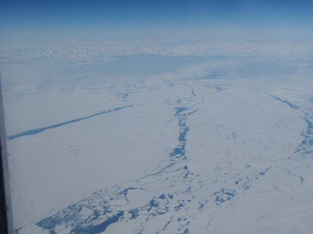

□17日目(2/28)Vancouver→Air CanadaAC001
とうとう日本に帰るときがやってきた。まずはこれまで共にがんばってきたJeepの所へ。コインパーキングの総料金は、$42にも達した。予想以上の出費となった。空港へのラストラン。バンクーバー国際空港の手前のガソリンスタンドで最後の給油。洗車してあげようと思ったが、洗車機がなく、洗ってやることができなかった。
そしてアラモレンタカーの駐車場に到着。荷物を降ろしていると、スタッフがやってきた。割れたバンパーを見せる。そしてそれを見たスタッフはこう言った。”No problem !!”。いやー、寛大である。事故の免責金も取られることはなく、何事もなく返却完了。Jeep Grand Cherokeeよ、本当にお疲れ様。最終総走行距離は6304kmであった。

チェックイン、荷物のチェックを済ませ、朝食をとって、搭乗時間まで免税店エリアでショッピングなどをして過ごし、13時頃飛行機に乗り込んだ。帰りは約9時間半のフライト。太陽を追いかけるので、日本時間の3/1 15:30頃までずっと太陽は頭の上にあることになる。天気は良く、アラスカ上空では、眼下には、アラスカのマッキンリー山を見ることができた。


□18日目(3/1)Air CanadaAC001→東京
日付変更線を越え、3/1になった。飛行機は、カムチャツカ半島の付け根付近、樺太、北海道、三陸海岸上空を通過した。オホーツク海は流氷に覆われており、樺太の雪山と広い平原も窓から良く見えた。そして、成田空港に着陸。久しぶりの日本だ。大量の日本語表記を見るとホッとする。


東京駅発の夜行バスまで時間がかなりあるので、空港で時間をつぶす。パソコンでネットをしたり、昼寝をしたり。結構疲れはあると思う。その後、JRに行き、夜行バスに乗車した。
□19日目(3/2)東京→名古屋
目が覚めるとそこはもう名古屋駅西。いやー、懐かしい。バスを降りて最初に目に付いたのが吉野家の看板だった。そういえばカナダに多数の日本食店はあれど、牛丼はなかった気がする。合宿の締めは吉野家の牛丼となった。改めてここは日本だと実感した。

―終わり―